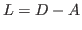

In order to make graph-mining decisions, often linear- and eigen-solvers are applied to common graph-associated matrices such as the combinatorial laplcaian,

. One particular class of graphs of interest are referred to as scale-free, whose defining characteristic is that the degree of the nodes follows a power-law distribution. For large graphs (nodes counts of millions or more), due to the large condition numbers, conjugate gradient can take over 10,000 iterations.In order for the solvers to scale on wide classes of graphs, sophisticated preconditioners need to be utilized. Before the solve iterations (and during for multi-level iterations) low degree structure such as trees, chains, and loops can be removed from the graphs. In the case of linear solves this is computationally accurate and can be done extremely efficiently. In the case of Eigensolves there is the possibility of the loss of algebraic accuracy, however, we justify the removal, in the context of data-mining quality, and quantify the effects.